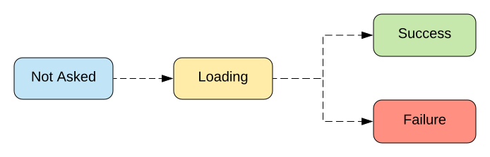

Типы без границ
фронтенд-разработка с GraphQL и умным компилятором
О чём доклад?
Вроде про GraphQL и Elm...
О чём доклад?
На самом деле...
- Сложность.
- Ограничения.
- Developer Experience.
- Trade-offs.
План
- Кратко про GraphQL.
- Кратко про Elm.
- GraphQL-типы в IDE разработчика: как рассказать компилятору, что ждёт БД от фронта.
- Выводы и впечатления от работы с таким стэком.
- Рекомендации желающим разобраться подробнее.
GraphQl
- Гибкое API: фронтенду хорошо, бэкенду тоже неплохо
- Типизировано, документировано
- Спецификация: реализуй сам
- Запросы, мутации, подписки
- Хорошо для агрегирования данных
Почему компилируют в JS?
- Что такое программирование?
- Управление сложностью.
- It's all about predictability.
- В JS сложно управлять сложностью.
Managing complexity is the most important technical topic in software development. In my view, it's so important that Software's Primary Technical Imperative has to be managing complexity. Complexity is not a new feature of software development.― Steve McConnell, Code Complete
JS, the bad parts
Слово создателю
JS, the bad parts
- Нельзя просто взять и исправить язык — сломается Веб.
- Много языковых возможностей — много возможностей делать плохо.
Что можно убрать из языка?
- Циклы
- Присваивание
- Мутации
- Инструкции (statements)
- Объекты
- Классы
returnи множественный возврат- Сайд-эффекты
Что можно убрать из языка?
nullundefinedNaN
Как так? 😱
- Циклы → Функции (рекурсия, HoF)
- Присваивание → Связывание
- Мутации → Иммутабельные структуры данных
- Инструкции (statements) → Выражения (expressions)
- Объекты → Модули, замыкания
- Классы → Типы, хэш-мапы
returnи множественный возврат → Единичный возврат без return- Сайд-эффекты → Управляемые (managed) эффекты
null,undefined,NaN→ Явная обработка (Maybe/Option)
Elm
A delightful language for reliable web applications.
Типы
Для моделирование предметной области.
Типы
Пример: да-нет.
type Bool = True | False
if isReady then go() else stop()
Типы
Пример: светофор.
type TrafficLights = Red | Yellow | Green
tlAction tl =
case tl of
Red -> "Stop"
Yellow -> "Prepare"
Green -> "Go"
Типы
Пример: загрузка данных
Типы
Пример: загрузка данных
type RemoteData error value
= NotAsked
| Loading
| Failure error
| Success value
Типы
Пример: загрузка данных
viewPostsOrError model =
case model.posts of
RemoteData.NotAsked ->
text ""
RemoteData.Loading ->
h3 [] [ text "Loading..." ]
RemoteData.Success posts ->
viewPosts posts
RemoteData.Failure httpError ->
viewError (buildErrorMessage httpError)
Типы
Пример: GraphQL
type alias Profile =
{ name : Maybe String
, account : Eos.Name
, avatar : Avatar
}
selectionSet : SelectionSet Model GraphQl.Object.User
selectionSet =
SelectionSet.succeed buildModel
|> with User.name
|> with User.account
|> with (Avatar.selectionSet User.avatar)
Типы
из бэкенда в IDE у фронтенда
- Экспортируем схему из GraphQl.
- Генерируем из неё Elm-модули.
- Теперь компилятор знает, что нужно серверу.
- Код получается production ready [почти] без тестов.
GraphQL + Elm
Подробнее в этом докладе.
Библиотека elm-graphql.
Когда пригодится GraphQL?
- Много источников данных.
- Много разных клиентов (веб, мобилы, внешнее API, ...).
- Когда задолбались создавать REST-эндпойнты.
Когда уходить от JS?
Когда есть разработчики, которые могут это обосновать.
Когда нет уже никаких сил поддерживать кодовую базу на JS.
Кстати о TypeScript
— Что наша жизнь?.. 🤔
— Trade-off 🤷🏻♂️
Выбор инструментов — личное дело каждого и зависит от задач.
Контрольный вопрос
- Есть один бэкенд и одна БД.
- Есть один фронтенд — веб-сайт.
- На сайте, в основном, формы.
- Заказчик хочет использовать Elm и GraphQl.
- Ваши действия?
Simple is not Easy
- Простое надёжнее лёгкого.
- Конкретное надёжнее обобщённого.
- Абстракции — хорошо, но в меру.
Чем интересно ФП?
А функциональное программирование уже затем учить следует, что оно ум в порядок приводит.
— М.В. Ломоносов
Почему Elm стоит внимания?
- Чтобы понять, что значит «не всрато».
- Разобрать идеи Redux, Vuex и пр. в первоисточнике*.
- Строгий, но справедливый и дружелюбный компилятор прививает хорошие привычки.
- Просто и приятно программировать.
*это всё уже было, только не в вебе
Лучшие технологии — те, которые экономят время, силы и деньги.
— Капитан
Конец
Спасибо